點左側（手機在上方）的資料夾，開啟機密檔案。
也可以從左下角「開始」選單一次全部開啟。
cat readme.txt
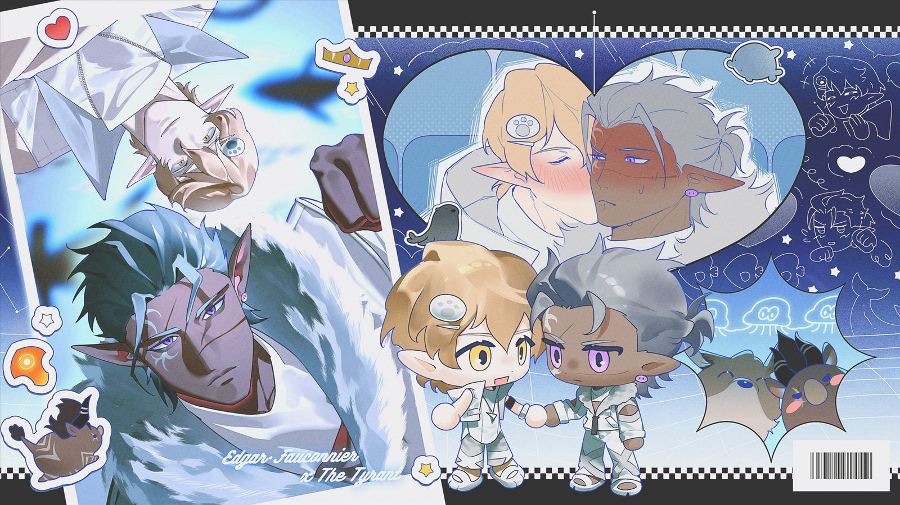
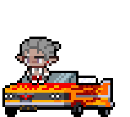
一眼愛上比木頭還木頭的石頭男該怎麼辦
夢角是 7 版大型支線出現的角色暴君，設定上如有 OOC 的部分皆為本人理解，如有冒犯先行跟您道歉。
委託／贈圖放置
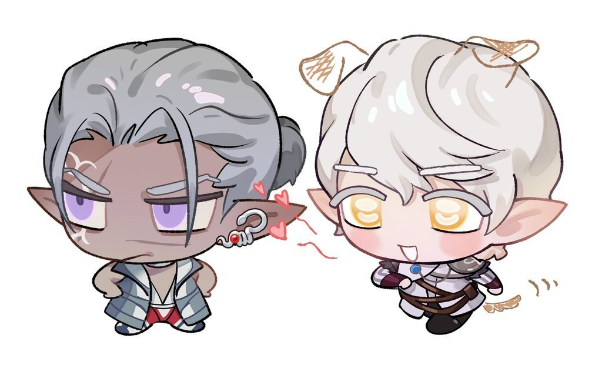
open arkose.pro
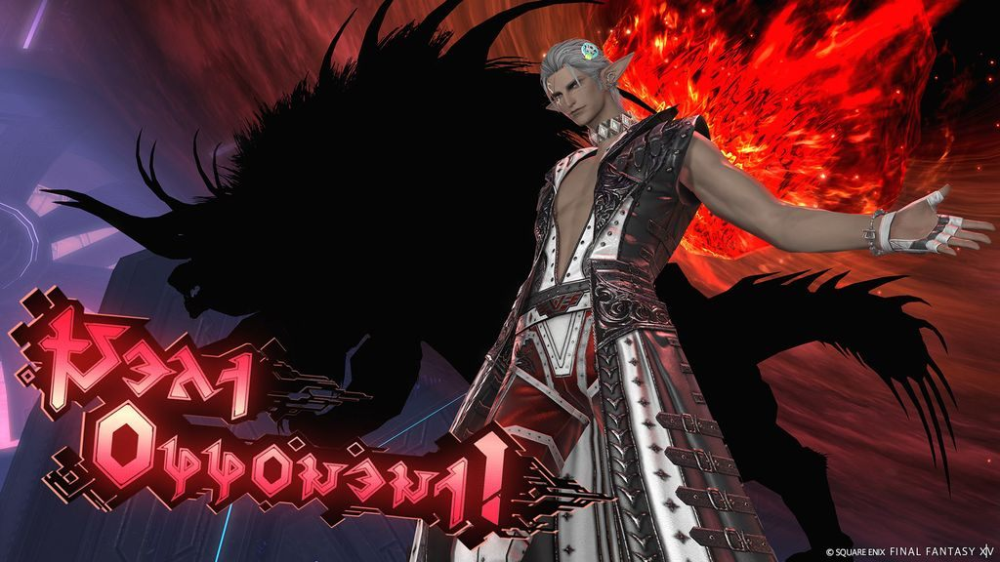
- 姓名
- 阿爾科斯 Arkose
- 鬥士名
- 暴君 The Tyrant
- 出生地
- 第九世界．邊郊鎮
- 種族
- 晶靈族男性（第九世界的精靈族）
- 年齡
- 20 歲
- 職業
- 阿卡迪亞鬥技場全量級冠軍
- 身高
- 213 公分
- 動物設
- 豬（貝西摩斯幼體像是小豬一樣）、牛（變身的模樣也挺像牛的）
外表
灰色後梳背頭半扎馬尾，前方有兩條散下來的瀏海，右眼與鼻樑有疤痕，右臉白色紋身，淺紫色眼睛。
補充：頭上調魂器準備變身時會變紅（也可以不畫，因為後面他也摘掉了），身上可以增加疤痕（愛看
性格
曾經只追求力量，高自尊心、慕強，講話正經且表情認真，是個為了工作認真演，認真中二的人。很多時候的舉動實際上是真正單純的笨拙，是個很直接表達的人。
感情方面
在狩獵者時代沒有想過，對於一心只想變強的自己，愛情和友情一概無用，別人的看法也毫無意義。他只在乎自己究竟能變得多強，並為此日夜苦練各式武器，一心要把魔物靈魂的力量用到極致。直到得到阿卡狄亞老闆青睞，在阿卡狄亞的經歷讓他逐漸改變，除了強大外開始會在意粉絲的看法，在意起阿卡狄亞，原本被他人稱為無趣男人的慢慢有了情感。
埃德加在他希望渺茫的時候，如流星般橫空出世。這個人不用魔物的靈魂，沒多久就來到了他的王座之前，他輸了，但這正是他渴望已久的敗局。
當埃德加再次出現在他面前時，他本以為對方是特地來這種郊外嘲笑他的，但對方卻說想陪他訓練，說著「既然你想變更強，只狩獵魔物怎麼夠呢？」「不如跟我對練吧！」埃德加笑得很傻又說的理所當然，漸漸的習慣了這個莫名其妙的男人出現在他身旁。
簡設
原本是擅長所有武器的「最強狩獵者」，即使不注入魔物靈魂也很強。比賽時會使用多種武器，招式也是千變萬化。身為全量級冠軍，有權利自由使用阿卡狄亞保管的靈魂，每次都會根據情況選用合適的魔物靈魂。在與玩家的對決中，選擇注入貝希摩斯的靈魂進行戰鬥。
暴君詳細背景故事.txt（官方不同國家文本稍微修改）
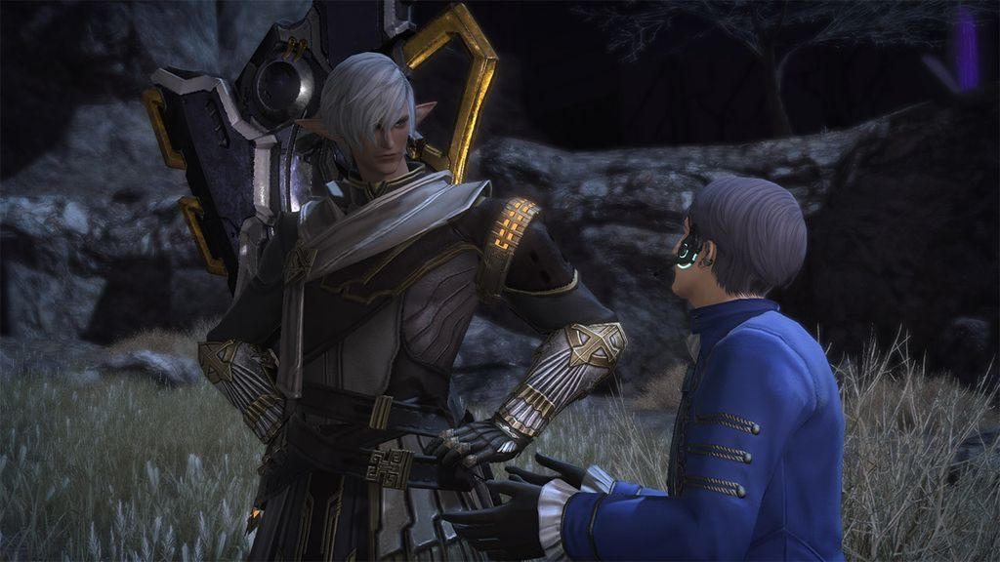
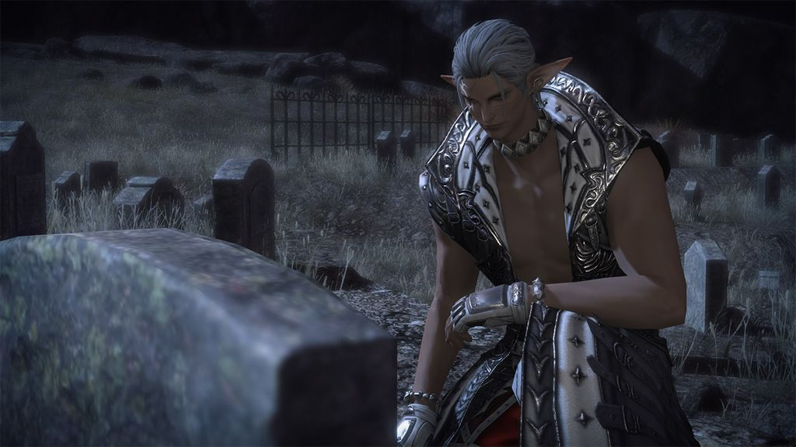
據說在舊時代，人們會在逝者的墳前立起一塊刻有名字的墓碑。然而在調魂器問世，記憶開始上傳雲端之後，人們已經無法再為逝者建立這種墓碑。因此，遺產之地的那一處「留下名字的墓地」為人們保留了一個很特別的概念。
這一天，一個男人來到了這裡，站在一座墓前安靜地站了很久。他的名字是阿爾科斯，但也擁有一個更廣為人知的名號——阿卡狄亞的全量級冠軍，頂點之上的「暴君」。如果他出現在九號解決方案的街上，恐怕整條街都會被支持者們堵得水洩不通。還好這片墓園非常偏僻，他不用擔心被打擾，得以一個人靜靜地面對墓碑——老闆的墓碑。
老闆曾經把林德布魯姆的靈魂注入體內，雖說出發點是為了治療靈魂壞死症，但他卻被靈魂反噬，變成了擁有無限再生能力的大蛇。萬幸的是，他最後還是得以結束那畸形的生命，除了一顆核心之外徹底化為了灰燼。他生前始終不願意戴上調魂器，非常希望自己能有一座豎著墓碑的墳墓，所以人們為他建造了這座衣冠塚。
寂靜中，阿爾科斯向這座空墳開了口。
「回想起來，第一次遇見您，也是在這種冷清的地方啊。」
阿爾科斯以前是個很有名的狩獵者，最出名的特點就是十八般武器樣樣精通。憑藉著超群的實力，他逐漸開始被稱為「最強的狩獵者」。但另一方面，他那「無趣又死板」的名聲也一點不比「最強」小。例如剛完成一個清剿魔物的大活，同僚想拉他去喝兩杯慶祝一下，他卻半點面子都不給，留下一句「我要練習新武器」就轉身離開。同樣的情況多了之後，人們就不再去邀請他。漸漸地，他的身邊已經沒有能稱得上朋友的人了。
不過阿爾科斯從來沒有孤單寂寞的感覺，他堅信只有軟弱的人才需要抱團取暖。對於一心只想變強的自己，愛情和友情一概無用，別人的看法也毫無意義。他只在乎自己究竟能變得多強，並為此日夜苦練各式武器，一心要把魔物靈魂的力量用到極致。有一天，他照舊來到落雷場，全神貫注地練習新到手的大鐮刀。此時，一位衣著得體的老人來到了他的面前，那正是阿卡狄亞的老闆。
「你想成為阿卡狄亞的鬥士嗎？」
阿爾科斯向來對娛樂活動不感興趣，但這鬥技表演在城裡鬧得沸沸揚揚，他想不知道都難。但在他看來，戰鬥乃是磨練自我的神聖修行，將其淪為供人取樂的表演，簡直就是不堪入目的低級趣味。
「我沒興趣。」
阿爾科斯一口回絕。但老闆不為所動，用平靜的語氣繼續說：
「可你現在其實發揮不出自己的全部實力吧？」
這句話像一根刺，深深栽進了阿爾科斯的心裡。他練得越勤，變得越強，身邊能與自己放手一戰的人就越少。再也沒有能讓他心臟狂跳的激戰，超越極限的死鬥早已成為了遙遠的回憶。不知從何時起，狩獵魔物也不再是挑戰，好像打卡上下班一樣平淡無奇，日子過得像一潭死水。老闆不但看穿了他心底的渴望，還主動提出能讓他滿足慾望的機會。但即使這樣，他還是猶豫了一下，並吐出了真心話：
「我可不想被當個雜耍笑話看，還要整天擔心被人追來追去。」
老闆聽後稍作思考，隨後提議：
「那要不當個蒙面鬥士？只要把臉遮住，大家就不會那麼在意你本人的身份了。」
這個主意對阿爾科斯來說非常合適，雙方一拍即合，再也沒有任何顧慮。
不久後，老闆為他選了「正義假面」這個鬥士名。從此他便以「充滿正義感的神秘正派鬥士」這個身分正式踏上了擂台。擂台上，阿爾科斯戴上了一副面具，即使身體注入了魔物之魂，這副面具也能很好地遮住他的真容。有了這層保障，他開始毫無顧慮地使出全力。壓倒性的強大實力令正義假面在擂台之上所向披靡，一個又一個的強敵被接連打敗。阿爾科斯體會到了與魔物戰鬥時從未有過的興奮感。每一步前進，面對的戰況都會瞬息萬變，令人緊張得屏息凝神。他終於找到了一個能放手一搏，逼出自己極限的地方。在阿卡狄亞的擂台上，他越打越暢快，彷彿重新找回了戰鬥的樂趣。
然而，在輝煌的戰績之下，正義假面卻始終得不到觀眾的歡迎。原因很簡單：他強得令人絕望，卻又笨拙得令人嘆息。個性木訥死板的阿爾科斯不擅長煽動觀眾，賽前賽後的熱場對話總是乏味無趣。更麻煩的是，他演不好老闆給他準備的「充滿正義感的神秘正派鬥士」。該讓觀眾沸騰歡呼的決勝時刻，他只會一言不發地拿下勝利。觀眾們想聽他說些振奮人心的漂亮話，他卻只會乾巴巴地分析賽況和總結失誤。他的實力過於超群，可過於重視勝負的表現無法令人感到任何喜怒哀樂。就算觀眾想為他投入感情，也找不到任何一個可以共情的落點。
阿爾科斯想要的，只是一塊能放手一搏的地方，他從來沒想過要在人前玩些蹩腳的表演。但不知從哪天起，他居然也開始為觀眾歡呼的熱烈程度暗自計較，為支持者們的反應患得患失。他原本對別人的眼光不屑一顧，但現在卻變得格外在意。
不久後，正義假面一路過關斬將，登上了全量級冠軍的寶座。他贏了，但觀眾的心卻不屬於他。落敗的對手贏得了歡呼，奮戰的前冠軍博得了滿堂喝彩，唯獨自己這個真正的勝者只得到了稀稀拉拉的幾聲鼓勵。在他看來，自己比所有人都強，比所有人都努力，贏到最後的也是自己，可人們不來稱頌勝者，反而去為敗者喝彩，這毫無道理。阿爾科斯一向堅信「強者為尊」，可眼前的這一切，卻讓他陷入了無法理解的挫折和失敗。他垂頭喪氣地回到休息室，誰知屋漏偏逢連夜雨，更大的打擊接踵而至：大屏幕上播放的「直擊阿卡狄亞」節目裡，觀眾們正在嘲笑新任全量級冠軍正義假面是個無趣又死板的傢伙。
他們說的沒錯，自己是個只會戰鬥，除此之外一無是處的廢物，也許是時候劃上句點了。他下定決心，走向老闆的房間。
「我不想做阿卡狄亞的鬥士了，我果然還是不適合。」
聽到這話，老闆思量了一下，溫柔地給了這樣的回答：
「你不用有顧慮，我看人一向很準。你骨子裡有股沸騰的情緒，假以時日，一定會大放異彩。」
阿爾科斯怔在原地，一個字也說不出來。人們一般都覺得他只有實力強大，可眼前這位老人卻不僅看中了他的強大，更看中了他的內心。老人的話讓他心頭一熱，既然如此，那就再相信他一次吧。相信老人的眼光，更是相信自己。阿爾科斯深深鞠了一躬。
然而就在這時，阿卡狄亞卻出了件誰也沒料到的事。包括前任全量級冠軍在內，不少身經百戰的鬥士居然一個接一個地病倒了。經過調查，這種病叫「靈魂壞死症」，是不斷注入魔物的靈魂引發的。見到鬥士們接連病倒，最受打擊的人就是老闆。
「這一切都是我的責任。我絕不會放棄任何一個人，我會把他們都治好的。」
老闆說完這句話後便四處奔走，尋找拯救鬥士的辦法。他找到創生設施的研究者，請他們幫忙想辦法。最終，一條路浮出水面——傳說中的大蛇「林德布魯姆」。據傳它有著近乎奇蹟的再生能力，或許可以用於治療病人。巧合的是，老闆恰好就是亡國貴族的後裔，林德布魯姆的蛇卵一直由他保管。
這事說起來不難，只要從大蛇體內抽出靈魂，注入自己的身體裡，就能藉助它的再生之力，治好被靈魂壞死症折磨的人。老闆決定賭這一把，將林德布魯姆的靈魂注入了自己體內。但這一試，換來的卻是另一場悲劇。
老闆確實變成了擁有驚人再生能力的大蛇，但卻沒能治好其他人。相反，過於強大的力量反噬了他的身體，使他再也無法變回人類的樣子。更糟的是，林德布魯姆的本能甚至開始侵蝕他的意識。
走投無路的老闆只好將自己關在擂台的深處。不久後，所有人都認為老闆的意識已經完全被大蛇吞噬。人人陷入絕望，認為老闆再也不會回來。就在此時，阿卡狄亞的機械裁判中傳出了一個年老的聲音。老闆安裝在自己身上的控制終端竟奇蹟般地沒有失靈。雖然意識被困在林德布魯姆的身體之中，但他竭力保持清醒，成功透過遠端遙控裁判與外界取得了聯繫。接著，老闆將最後的解決方案告訴了阿爾科斯。
「打敗我，用林德布魯姆的核心治療大家。」
老人是他的恩人，是一直信任他的人。面對這樣的要求，阿爾科斯毫不猶豫地拒絕了。他立刻找到參與研究的學者，懇請他們另闢蹊徑，但得到的只是一次又一次無能為力的搖頭。說到底，就是因為走投無路，老闆才會鋌而走險。阿爾科斯不得不壓下撕心裂肺的痛苦，向傳說中的大蛇舉起了武器。可惜，現實總是比想像更殘酷。他這個全量級冠軍使出渾身解數也沒能打敗林德布魯姆。在這條再生能力近乎喪心病狂的大蛇面前，他苦練多年的力量與招式，竟是如此地蒼白無力。明明砍傷了它，肉體卻會在瞬息之間恢復，就算使出全力，也看不到丁點獲勝的可能性。至今未嚐一敗的他，第一次感受到了什麼叫一敗塗地。用盡手段從擂台逃出生天後，阿爾科斯透過裁判聯絡上了老闆。
「阿卡狄亞不能停，只有辦下去，才有機會找到能戰勝林德布魯姆的人。」
老闆下令封鎖了靈魂壞死症的消息。他們對外宣佈病倒的鬥士已經退役，其實是讓他們進入低溫休眠，抑制病程進展。自此，阿卡狄亞有了新的目標。表面上，它是點燃觀眾狂熱情緒的鬥技表演。而背後的真正目的，是遴選出能擊敗林德布魯姆的強者。全量級冠軍正義假面的職責，就是成為挑戰者的最後一道關卡。
自那之後，阿爾科斯便一直在拼命戰鬥。他比誰都清楚林德布魯姆的恐怖，知道尋常實力不會有絲毫勝算。正因如此，他更不能輕易輸掉比試。只有強大到即使他傾盡全力也無法戰勝的人，才有可能肩負起擊敗大蛇的重任。此刻的他已經無暇顧及觀眾的目光，只是沉默地出手，將前來挑戰的對手一個個徹底擊垮，不留半點餘地。正義假面的比賽總是一面倒，觀眾自然覺得沒意思。某天，這股怨氣徹底爆發了。阿爾科斯打敗了挑戰者後，觀眾席上噓聲四起，到處都是喝倒彩的聲音。
「無聊死了！到底是誰喜歡看這種表演啊！」
「演都不會演！一點節目效果都沒有……沒勁！」
「冠軍也沒個冠軍的風度，留手你會不會啊！讓別人輸這麼難看！」
觀眾不知道靈魂壞死症和老闆的遭遇，自然無法苛求他們。阿爾科斯雖然能夠理解這一點，可在接連不斷的污言穢語中，他那股沸騰的情緒終於爆發了。他一把扯下臉上的面具，狠狠摔在擂台的地面上。然後冷冷掃過觀眾席，將心底那股情緒化作一聲怒吼。
「這才是真正的阿卡狄亞！」
觀眾席瞬間鴉雀無聲，連倒吸涼氣的聲音都聽得一清二楚。
「這裡是鬥技場，不是馬戲團！不是給你們鬧著玩的！留手？笑話！我是全量級冠軍，是天上的頂點！在我的阿卡狄亞裡，弱者就該滾蛋！」
正義假面一直是正派人設，如今卻像換了個人似的，場邊的觀眾一片嘩然。
「搞什麼啊…」
「他不是正派鬥士嗎…？」
「他根本就是個該死的暴君！」
暴君。
這個詞像野火般在競技場中蔓延，引發了更加巨大的喧鬧。
「暴君！」「暴君！」「暴君！」
轉眼間，山呼海嘯般的喝采聲匯聚成同一個名字。阿爾科斯愣愣地站在那裡，一時回不過神。他空有實力，卻從未贏得誰的認可。他試著扮演正派鬥士，卻始終不被接納。然而當他卸下自己的偽裝，將所有怒火、傲慢和軟弱展現在人前時，人們才第一次看清了他。這位鬥士有的不只是強大的實力，還有在心中沸騰的滔天怒火。
就在這一天，正義假面消失了，取而代之的是站在阿卡狄亞頂點的全量級冠軍——「暴君」。為了老闆，為了因靈魂壞死症而倒下的鬥士，為了培養出能夠打敗林德布魯姆的人，阿爾科斯決定親自成為反派鬥士。
他比任何人都強，也比任何人都惡。即使如此，他也永遠在頂點之上巋然不動，成為了阿卡狄亞無人能逾越的高牆。這就是他對自己肩負的職責所給的答案。諷刺的是，成了暴君之後，他反倒得到了過去求之不得的歡迎。當正派鬥士的時候，他從未聽過如此盛大的歡呼。當了本應遭人唾棄的暴君後，他反而成了所有人瘋狂為他搖旗吶喊的明星。而鬥士們也被暴君那副挑釁的姿態激起了戰意，他們個個摩拳擦掌，誓要將他打倒在地。為了跨過這道可恨的高牆，他們你追我趕、相互較勁，實力在一次次切磋中越來越強。
然而即便如此，世上仍依舊沒有人能戰勝暴君。沒多久，阿爾科斯自己也出現了靈魂壞死症的症狀，留給他的時間不多了。就在他希望渺茫的時候，一位挑戰者如流星般橫空出世。這個人不用魔物的靈魂，也沒有借助外力，一路過關斬將、連戰連捷，沒多久就來到了全量級冠軍的王座之前。要打倒林德布魯姆，這位挑戰者或許就是最後的希望。為了讓對方毫無保留地使出全力，重量級鬥士們無所不用其極，輪番激將挑釁。最後，全量級冠軍暴君在天頂親自迎戰了這位挑戰者，他傾盡一切去驗證對方的實力，與對方展開了無比激烈的較量。待場上的塵煙消散，他輸了。但這正是他渴望已久的敗局。
阿爾科斯輕輕把手放在了墓碑上。
「您看人的眼光果然很準。」
曾經的自己的確是個只知道追求力量的傢伙，既無趣又死板。但現在不一樣了。有人誓要超越暴君，有人對阿卡狄亞愛得深厚。而在這片喧囂之下，還藏著一份被鄭重託付的未來。
阿爾科斯緩緩站起身來。新的全量級冠軍已經離去，如今的暴君的統治只是暫代其位。但現在，以黑貓為首的新一代鬥士正對天頂上的王座虎視眈眈。
既然如此，他的職責就只有一個──擋在他們面前。只要老闆的遺願不滅，只要阿卡狄亞的鬥技沒有停歇，他就永遠是鬥士們必須跨越的高牆，永遠是終有一日會被人推翻的暴君。
阿爾科斯轉身離去，將墓碑留在身後。他所踏出的每一步，都篤定而決。在暴君的征途之上，狂熱喧囂的擂台正靜候他的歸來。
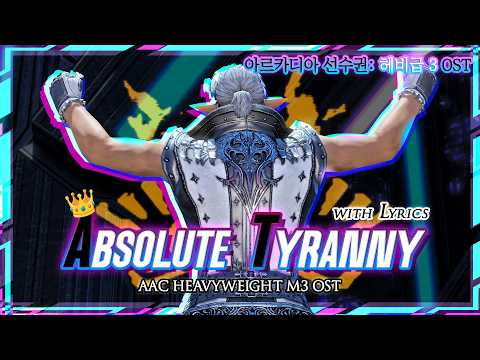
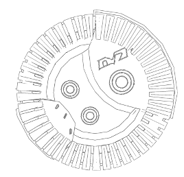
open edgar.pro
- 姓名
- 埃德加．福科尼耶 Edgar・Fauconnier
- 出生地
- 原初世界．伊修加德
- 種族
- 精靈族男性
- 年齡
- 30 歲
- 職業
- 光之戰士（冒險者）
- 身高
- 207 公分
- 動物設
- 郊狼、狐狸（跟前者外觀相似）、黃金獵犬
外觀
淡金色的微捲髮與橘黃雙眼、被衣物遮擋的身上有許多疤痕。為什麼只有身體有疤痕呢，因為他懶得治療臉以外的地方。
個性
溫和親切、健談開朗、喜歡惡作劇，講話不太正經，他一直都保持著微笑，跟各種人都能簡單的混熟，是個你請他幫忙就幫忙的熱情冒險者。面對要用生命去與敵人奮戰這種事好像都沒什麼一樣，對於付出生命去做事情理所當然的有些不對勁了。
感情方面
是個很隱藏真心的人，這些年來他送走了太多戰友與朋友，面對感情會逃避，所以一把年紀了還沒談過戀愛，當真的喜歡上了又忍不住想接近，想待在對方身邊。
阿爾科斯很強，強的讓他放心，所以他在阿卡狄亞打敗對方後就一直用訓練的名義去接近他。他很喜歡阿爾科斯那認真單純的模樣，時而逗弄他表面冷靜但害羞的反應也很可愛，在他身旁總覺得很輕鬆。雖然埃德加想過對方可能永遠不會感受到自己的心意，但在他必須為了光之戰士的義務前往下個世界之前，他還想多待在阿爾科斯身邊，哪怕多一天也好。
簡設
年輕時追隨父親的腳步成為騎士並在前線與龍族作戰，他的性格較為溫和，更傾向於保護而非殺戮，退役後成為一名獵人，過著相對自由的生活。他戰友都有保持聯繫也廣結善緣，但就是沒跟人有更加親密的關係。莫名被人稱為光之戰士，經歷了大大小小的事情拯救完世界進入了真正的自由狀態，在第九方案閒逛時被推薦去挑戰阿卡狄亞登天鬥技場，然後他就這樣稀里糊塗的答應了，畢竟一路冒險大家要求他幫忙做什麼去哪都會幫。
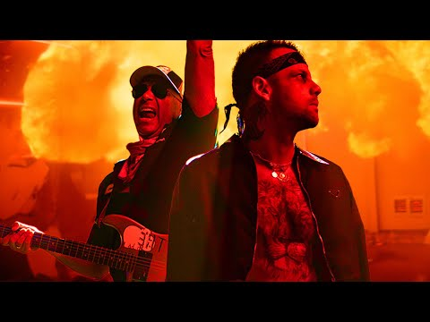
從歌詞可以了解到光之戰士的本性是個戰鬥狂。
dir .\reference
體型偏好
暴君（灰髮）3～4 的體型皆可，變身偏好 4
埃德加（金髮）2～3 的體型皆可
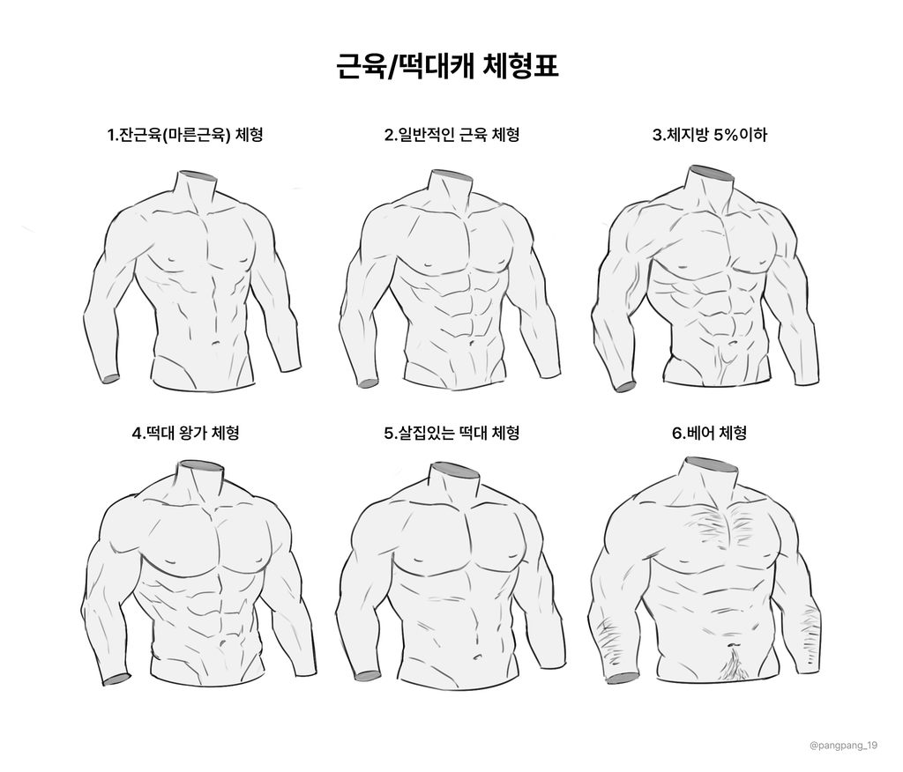
遊戲內參考
若我無指定服裝，服裝可移步下方衣櫃區。
＊色票供參，可以依照用色改動。
＊如委託塗鴉可以簡化但請不要亂改，曾遇過委託插圖但飾品改成完全不相干的筆刷素材，因此特別提出。
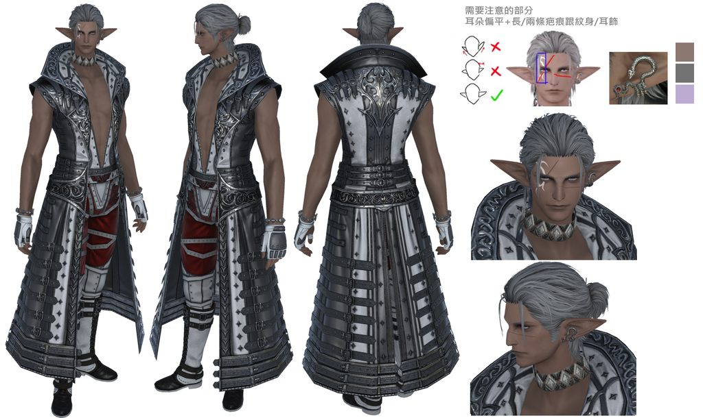
變身相關
- 變身後體型比原本大了約三倍左右
- 很喜歡有尖牙所以可以畫尖牙（好
- 特徵上的改變：巨大的角（耳朵因為角變成下垂）、黑髮（髮根有些帶灰）、黑色眼白、白色眼瞳（感覺有一點點淡紫）、膚色變深有白色紋路、巨大的尾巴（根部連接紋身處有些白）
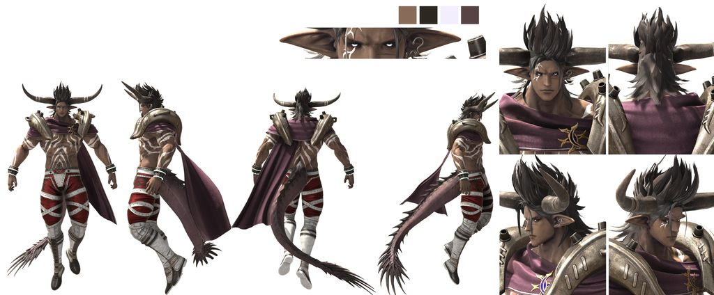
武器
不變身時也會使用這三種武器，他可以隨時用雷轉質創造出武器：巨斧、巨劍、鐮刀。
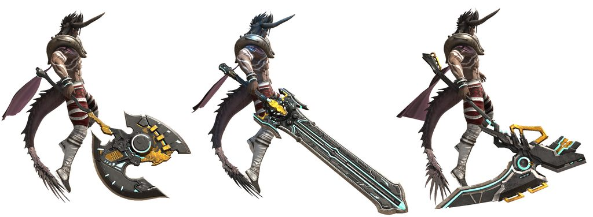
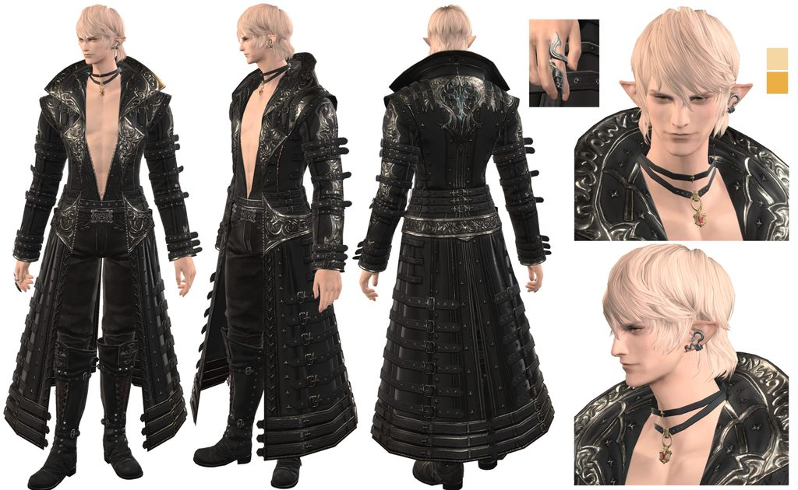
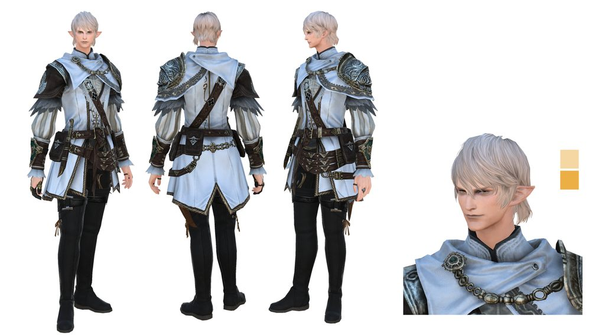
白色不怕髒嗎？——髒了就換一件新的
dir .\wardrobe
若我沒有指定外觀，也可以直接選擇畫這邊的衣服。
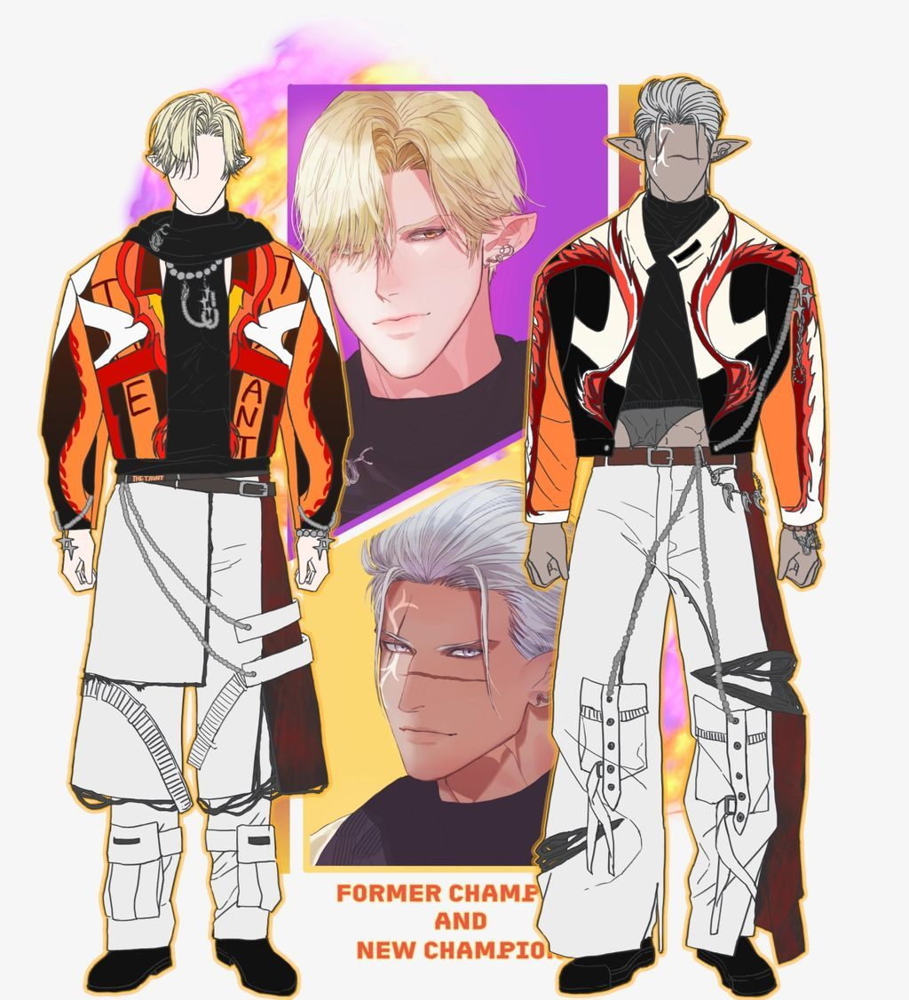
適合飆車的衣服（？）
服裝 tag：流星／火焰
type story.txt
（不擅長文字，想到什麼打什麼請見諒）
時間線：打敗了大蛇化的老闆成功治療了鬥士們的靈魂壞死症之後，阿卡狄亞鬥技場不再使用魔物的靈魂進行鬥技賽事，慢慢轉型成單純對戰的重整階段。由於老闆不在了加上鬥技場轉型，阿卡狄亞需要更多新的改變與流量。
《阿卡狄亞時刻》的特別節目公開了靈魂壞死症的真相、老闆的下場，以及那位前任全量級王者暴君的本名，阿爾科斯。
在他終於試著踏出那步，每天以訓練為藉口接近暴君之後的幾天之後，剛好來酒吧想喝杯酒就從電視螢幕知道了這些事情。
周遭其他酒客對於暴君耳環的流言讓他在意的要死。
因為那個蛇型的耳環怎麼看都是老闆贈予他的，有酒客起鬨著「暴君他一直沒有緋聞是不是跟老闆…」後面的話埃德加記不清楚了，「說不定他心裡早就有人了」「活人沒辦法跟死去的人比」這種想法在腦中無法揮散。雖然腦袋想著這些但他還是維持著笑容，那是他最熟練的一張表情，那晚他喝得特別多。
雖然各種困難與危險上應對都很輕鬆，即使隨時要面對死亡也坦然接受，但他沒想到真的在意一個人的時候無法像往日一樣發揮自己的長才，況且這種問題問本人也太失禮了，因為只要他開口，只要他問出「老闆對你來說是什麼」，那個坦率得沒有半點遮掩的男人就一定會回答。認真地一個字一個字回答。埃德加想到這邊露出了無奈的笑容，喝完最後一杯酒他趴在桌上自言自語「讓我任性一下吧」。
他不會開口問，依舊每天跑去煩那個像石頭一般的男人，直到他必須再去做光之戰士的工作為止，畢竟感情這種東西只要他離開得夠遠夠久，遲早會冷下來的。他也知道對方一定會發現他的不對勁，畢竟那個男人的觀察分析能力強到嚇人，就算自己擅長隱藏情緒，也難以壓抑看見耳環時短暫的遲疑。
他在賭，賭對方出於尊重不會過問他的隱私，那他就可以藏著自己的心意，直到必須離開的那天。
也在賭，賭跟對方或許有那麼一點點可能，或許有那渺茫的機會能在對方心中留下些什麼。
暴君確實察覺到他的不對勁並且一一分析。1. 不該露出破綻的次數多了很多。2. 對方的笑容變得有些不自然，像是在遮掩什麼。3. 伸手扶他的時候對力道比之前輕很多，而且會馬上後退一步，像是在保持距離。暴君把這三件事在腦子裡擺在一起，想了好幾天，想不出結論。
當埃德加收到了來自拂曉夥伴的通知，真的要離開第九世界去處理光之戰士的義務時，埃德加除了跟梅特莫說以外他沒有告訴其他人他要走，他只是開始做那些他很熟練的事：把「明天見」換成「再說」，然後回到他在旅館的住處把少少的行李快速的整理好，隨時都能出發。
當埃德加去阿卡狄亞辦冠軍身分的暫離手續時，一開始一切都很順利。
雖然梅特莫很想留他下來，但他也尊重埃德加的選擇，當梅特莫問出「你有跟暴君說嗎？」埃德加寫文件的手停了下來，露出了不好意思的表情。「抱歉，我不擅長跟他溝通。」腦袋一片混亂的埃德加擠出了蹩腳的謊言。
沉穩的腳步聲從身後傳來，埃德加的心跳更加慌亂了，那個自帶威壓的腳步聲讓他不用轉頭就知道是誰。
即將當上代理冠軍的男人就在他身後，他沒想到還要面對暴君，原本以為跟梅特莫私下辦好手續就可以了。
「你要走。」低沉平穩的聲音淡淡地說著。
埃德加看到面前的梅特莫露出了一臉我不該在這裡的表情，默默收走埃德加寫好的文件逃離這個令人感到窒息的空間。
埃德加轉過身時笑容維持得很好。「嗯，原初世界那邊有點事，老朋友叫我回去幫忙。」語氣輕鬆得像在講明天的天氣。
「本來想明天過去跟你講的，畢竟你要代理我的位子嘛。」他又說謊了，他本來打算辦完手續就直接離開，然後留下一封「抱歉有急事，所以冠軍之位還給你」的道歉信。暴君看著那個笑容看了很久，久到埃德加的臉都快笑僵了。「我讓你不開心了嗎？」直白，但跟埃德加想的方向不同，那種不擅長說話的笨拙讓他真心的笑了出來。「不是。」「我只是去辦事。」雖然表情放鬆了許多，但埃德加的眼神往旁邊飄移不敢看著對方。
「那你看著我說。」暴君緊緊抓住埃德加的肩膀，他的表情依舊是那副認真嚴肅的模樣。
埃德加嘆了一口氣，心想面對這個男人他果然是沒轍，然後就豁出去了，就算對方只把他當成朋友也好，他不打算繼續逃避。
他將自己這些時間異常的行為解釋給他聽，將自己聽到的不該想的說了出口，而暴君只是靜靜地聽他說完。
「耳環是老闆給我的沒錯。」暴君伸手摸了自己左耳的耳環，似乎在回憶從一開始被老闆看中，和最後自己親手手刃那位恩人的事情。「這是他要使用林德布魯姆的靈魂時先交給我的。」「他將阿卡狄亞託付給我，而我接受了。」沉默了一陣子，他補充了一句「就是這樣。」
埃德加知道他雖然講的很平靜，但他知曉這個男人承受了怎麼樣的重擔，老闆與林德布魯姆融合之後發生的事情，靈魂壞死症隨時可能奪走他的性命，當時這些事情只有重量級成員跟梅特莫知道，而他卻讓他想起這些回憶。
「在訓練時的反應不是討厭我，明白了。」在他還陷入愧疚之中的時候，暴君又開口了。
「就這樣？不覺得我很奇怪？」埃德加不知道自己現在的表情如何，肯定很醜吧。
「你本來就很奇怪。」嘴角微微地往上，他笑了。
「突然出現，解決一切。」「習慣了，又突然想走。」「為什麼？」暴君認真的表達他的不解，他始終搞不明白這個男人的招式，不論是在對戰的時候或是現在。
埃德加平常跟暴君說話總是拐彎抹角愛開玩笑，他喜歡看他聽不懂但那種認真想了解的表情，他大可以再想個什麼暴君聽不懂的話打模糊過去，但都到這種時候了。
「阿爾科斯。」突然聽到自己的本名，暴君的眼神動搖了。「我喜歡你，我從未這麼喜歡過一個人。」埃德加緊緊盯著暴君，眼淚不受控制的流下。
「喜歡，那為什麼要逃？」他粗糙的手笨拙地擦掉埃德加流下的淚水。
「因為我害怕，害怕你心中已經有人了。」「就算你接受我的心意，我遲早也會離開你身邊沒辦法一直待在這裡。」
埃德加還在那混亂的情緒之中，然後下一秒⋯他的鼻樑被撞了。
暴君用一種像是迎擊的速度吻了上來，嘴唇壓得又直又硬，帶著一股用力往前頂的力道，像是在確認雙方誰的頭比較硬。
「唔！！⋯阿爾科斯！」埃德加捂著鼻子退開，眼淚又因為這個撞擊撞到流出來了。「剛剛那個，是頭槌嗎？」
暴君沉默了一下，淡紫色的眼睛裡浮現一種罕見的慌亂，然後又被強行壓了下去。
「是吻。」「有哪裡不對嗎。」埃德加傻眼了，他前面那些沉重痛苦的情緒瞬間消失，他大笑了起來。
「你呀…真的很可愛。」「所以，我當成你接受我的心意了？」他往前一步，雙手撫上暴君的臉頰。
「暴君與可愛毫無關聯。」暴君一臉嚴肅的反駁，埃德加感受到他臉頰的熱度明顯上升了。「好好好，暴君不可愛。」暴君點了點頭，表達了認同。
「你呀，擅長各種武器。」「但是接吻這部分…」埃德加吻了上去，跟暴君那像是石頭撞擊一般的吻不同，又輕又軟。
「還要多多練習。」埃德加笑得像是惡作劇得逞的小孩一樣，他從來沒看過暴君露出如此慌亂的表情，他那長長的耳尖與臉頰變得紅通通的。
「冠軍，你們調解好了嗎？」梅特莫的聲音從門外傳來，埃德加面前的暴君已經變成燒起來的石頭了。
「基本上調解好了，但詳細的部分我想還要花幾天溝通比較好。」埃德加像是什麼都沒發生似輕鬆地說著，一邊走去開門。
梅特莫快嚇死了，在他眼裡暴君的臉色像是氣炸一樣紅通通的而且還一言不發。「…冠軍，你…你對暴君說了什麼讓他這麼生氣。」「嗯～我承認我不負責任想把冠軍之位丟給他烙跑。」基本上是實話沒錯。「冠軍，你不能因為能打贏暴君就這樣挑釁他啊！！」
埃德加笑得更開心了，一個被他欺負的腦袋當機了，一個快要崩潰了。
「埃德加。」暴君已經恢復成平常那嚴肅的模樣了。
「真難得叫我本名呀，泰蘭特。」埃德加用了他對暴君的愛稱（比方說就像是埃德加是其他語系的人，用有口音的英文唸「暴君（The Tyrant）」這樣的感覺）。
「又用那個奇怪的叫法。」暴君一開始聽到他這樣叫他時還以為他在挑釁自己，畢竟一個人突然用奇怪的語調唸你的名字怎麼想都像是在挑釁，但那個人一臉認真的說，而且是每次說都是那個奇怪的叫法，久而久之也習慣了，習慣在這個世界只有那個人會這樣叫他。
「暫時保管王者之位的身份我接受。」一旁的梅特莫鬆了一大口氣。
「到時候，你必須想辦法親手奪回王座。」「我會全力以赴。」埃德加看著他一臉真拿你沒辦法啊…。
「我會的，我一定會再次從你手中奪走。」「不只王座，還有你的心。」
「一言為定。」兩人緊緊握住對方的手，無視了旁觀的梅特莫。
「靈感源源不絕！！！！真正的王者歸來，向眾人震撼宣示自己的心意！這場一定會大賣，直接讓阿卡狄亞衝上高峰！我這就去籌備宣傳還有台詞！」梅特莫高興的帽子都歪掉了，兩位冠軍異口同聲的阻止了他：「不行。」
「真的不行？？為了阿卡狄亞可以的吧？」埃德加幫梅特莫把帽子戴好，笑著說「等我回來再說吧，我一定會回來的。」
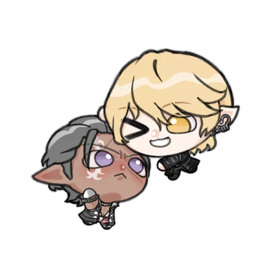
man world
角色互動
- 兩人都是好鬥分子，時不時就會切磋武藝，埃德加也是藉此與他變得熱絡，吵架的時候也是打一架。
- 暴君屬於高自尊心的人，而埃德加相當隨意，不太在乎他人對他的看法。
- 埃德加身為年長的一方卻表現得比較不成熟，暴君有點成熟過頭但太木頭了。
- 埃德加總是戲弄暴君，他喜歡看暴君臉紅不知所措或一臉困擾的樣子。當然，對方如果正經地詢問他的話，他反而尷尬而自己害羞。
- 暴君有時也會因為一些認真強勢的舉動，或是學習埃德加的招式反擊，讓埃德加滿臉通紅。
觀念差距
兩人出生於不同世界，有很多觀念差距，主要補充第九世界的部分。
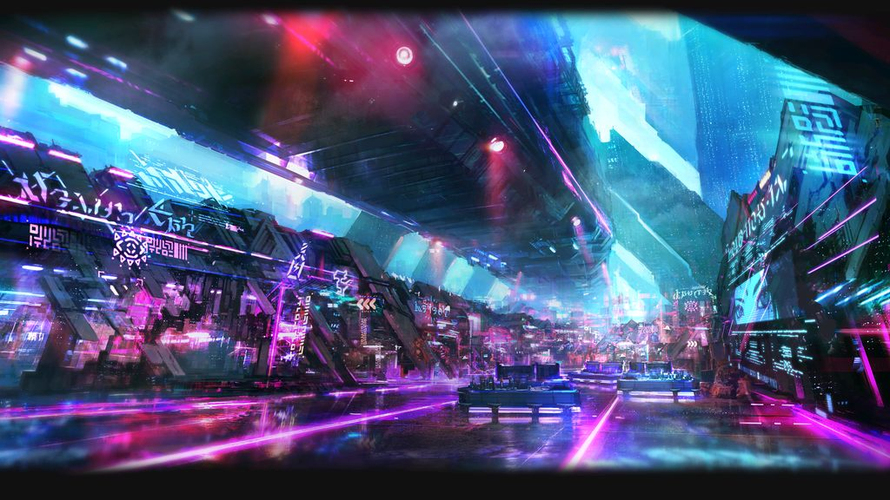
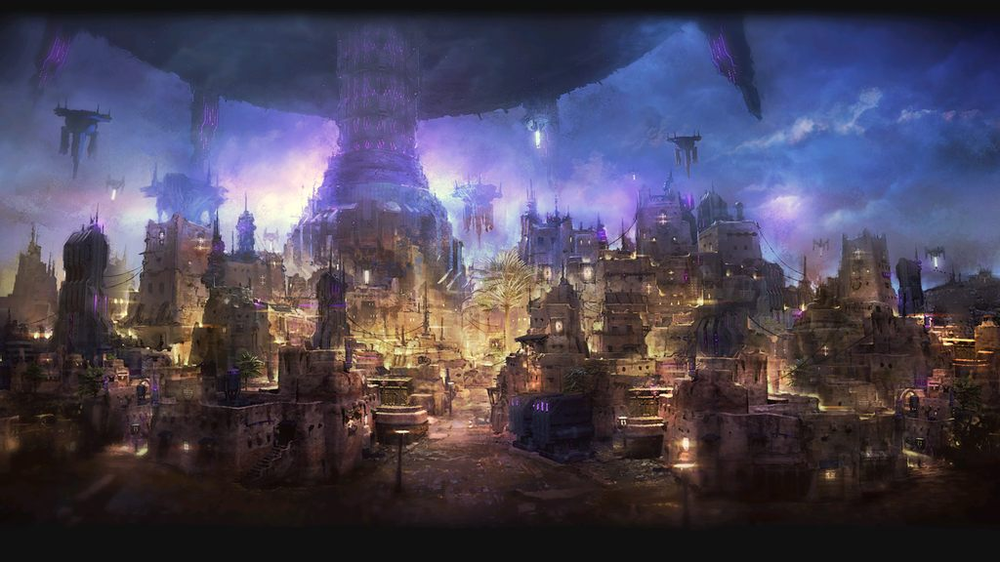
1. 天氣與生活方式
暴君所處的第九世界被穹頂籠罩，人們居住區內充滿雷屬性製成的高科技產物與人造光，而居住區以外的地區也是永遠充滿雷屬性落雷烏雲籠罩的天氣，城內衝浪的海浪也是人造的，食物也都是些看起來不美味的營養補充品。出生在第九方案的人們從未見過真正的太陽與其他該有的四季。
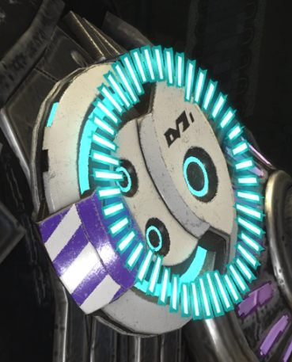
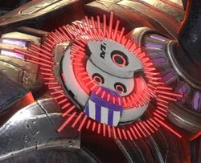
2. 死亡與記憶
第九世界的人們遭遇意外時（如：被魔物殺死）可以透過頭上的調魂器調用靈魂資源進行復活。身體老化自然老死時，調魂器會干涉佩戴者的記憶，將與死者相關的記憶刪除，上傳到雲端，可以讓人避免因死亡而產生的悲傷，因此墓園已經許久未有人使用。而老闆的墓或許是他本人的願望，又或者是暴君與阿卡狄亞的眾人想要記住他而做的決定。
在必須解決大蛇化的阿卡狄亞老闆時，暴君主動說出「保證勝利者的手不會被玷污」並親手殺死老闆，那是他第一次殺人。而經歷過各種事情、殺敵無數的光之戰士，覺得他這樣耿直的性格很單純，單純的可愛又讓人心疼。
EOF · 資料整理自 Notion · 最後同步 2026-10-24